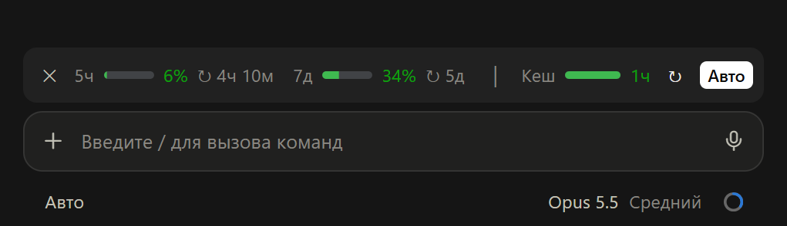

limits-cache v0.0.1
Полоса над полем ввода
Вы видите остаток лимитов и время до сброса кеша промпта.
- Лимиты аккаунта за пять часов и за семь дней: процент и время до сброса.
- Полоса кеша зелёная, пока осталось больше половины, потом жёлтая и красная.
- Кнопка ↻ прогревает кеш скрытым форком сессии, «Авто» делает это за три минуты до конца.
- Закрытую полосу вы вернёте командой
/limits.
Зачем прогревать кеш
Claude Code хранит контекст сессии в кеше промпта. Пока кеш жив, каждый запрос читает контекст за 10% цены входа и продлевает кешу жизнь. Если вы ушли дольше, чем живёт кеш, следующее сообщение записывает весь контекст заново: за 125% цены у 5-минутного кеша и за 200% у часового.
Для прогрева мод отправляет короткий запрос: он только читает кеш, и отсчёт начинается заново. Ответ после паузы к тому же приходит быстрее: контекст не нужно обрабатывать заново.
Пример: в сессии 200 тысяч токенов контекста. Прогрев стоит как 20 тысяч токенов входа, перезапись часового кеша как 400 тысяч, в 20 раз дороже. Множители взяты из тарифов API Anthropic. Если вы не пишете час, «Авто» выключается: держать кеш дальше нет смысла.
